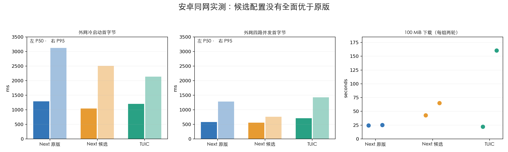

2026-11-22 · 安卓真机核心测试 · 香港公网节点
本轮候选配置没有通过默认升级标准，保留原 BBR 与即时 OPEN。完成了实现、筛选和真机对照；新增参数保持可选，不能声称已修好偶发失速。每组 199 次短请求均成功，100 MiB 各 2/2 完成；但原版 Next 的 32 MiB 第二轮仍超时，说明长传输问题尚未根治。
候选版外网四路首字节 P95 从原版 1281.8 ms 降到 760.3 ms（TUIC 1427.6 ms），但受控复用请求和四路有效吞吐退步。四路吞吐中位数：原版 4.19、候选 1.18、TUIC 2.60 Mbps；单路：原版 5.65、候选 6.34、TUIC 9.06 Mbps。100 MiB 原版 24.648 / 25.334 秒、候选 42.854 / 65.071 秒、TUIC 22.320 / 160.374 秒。没有一种在所有项目领先。
仅首包合并的同端口试验中，冷启动 P95 从 1589.4 ms 到 5563.6 ms，保持关闭。同端口 BBR 复测的 32 MiB：候选 15.795 / 13.815 秒，原版 10.791 / 13.307 秒，未确认换 BBR 的收益。采样规模小，不作显著性保证。

手机原 VPN 已恢复、保持唤醒设置恢复为 0；临时服务、监听端口与凭证已清理。生产 443 和 18447 的 TCP/UDP 仍监听。未改装正式 App。
原版：现有 BBR 实现、即时发送 OPEN、原接收窗口。候选版：bbr_meta_v1 实现 + OPEN 与首段业务合并，接收窗口不变。名称中的 meta_v1/v2 是依赖库实现名称，不能据此称作 BBR 算法的标准代际。TUIC v5 使用 CatNode/Xray 实际服务端，客户端为同一 Android 可执行文件里的 Mihomo TUIC，BBR、ReduceRtt=false、FastOpen=false。两种实现并非相同代码栈。
同一安卓 TFY-AN00（Android 12），同一 Wi-Fi、同一 VPS/IP、证书验证开启。正式对照关闭详细追踪；循环轮换协议先后顺序。原版 Next 端口 19458，候选版 19459，TUIC 19451。受控目标为同机 HTTPS；外网目标为 www.cloudflare.com。固定 IP 入口用于隔离 DNS 影响。本轮并非 App 界面、蜂窝或切网验收，也不代表隐蔽性检测结果。
首字节包含入口连接/复用、目标 TLS 与 HTTP 响应；冷启动每次新建池，连续请求轮换 3 个池，八路并发用单池。P50/P95 采用成功样本 nearest-rank 分位数，失败另列，不能把失败排除后称总体无尾延迟。大文件预算：1 MiB 60 秒、32 MiB 90 秒、100 MiB 180 秒；所有失败保留。MiB=1,048,576 字节。下载完成要求长度与内容校验通过；超时行只说明收到的部分字节。
| 测试 | 实现 | 阶段 | 成功/总数 | P50 ms | P95 ms | 均值 ms |
|---|---|---|---|---|---|---|
| final-controlled | Next QUIC 原版 | cold | 24/24 | 918.1 | 2829.3 | 1225.0 |
| final-controlled | Next QUIC 候选版 | cold | 24/24 | 869.6 | 1628.8 | 981.4 |
| final-controlled | TUIC v5 | cold | 24/24 | 1022.4 | 2414.7 | 1293.5 |
| final-controlled | Next QUIC 原版 | prime | 3/3 | 772.6 | 956.5 | 764.9 |
| final-controlled | Next QUIC 候选版 | prime | 3/3 | 1080.2 | 1131.5 | 1030.1 |
| final-controlled | TUIC v5 | prime | 3/3 | 1320.5 | 1500.3 | 1101.4 |
| final-controlled | Next QUIC 原版 | warm | 24/24 | 397.9 | 610.4 | 419.0 |
| final-controlled | Next QUIC 候选版 | warm | 24/24 | 443.9 | 1252.7 | 592.5 |
| final-controlled | TUIC v5 | warm | 24/24 | 528.9 | 1090.6 | 539.6 |
| final-controlled | Next QUIC 原版 | batch | 32/32 | 397.5 | 721.7 | 454.4 |
| final-controlled | Next QUIC 候选版 | batch | 32/32 | 602.4 | 1098.5 | 692.4 |
| final-controlled | TUIC v5 | batch | 32/32 | 415.2 | 1011.5 | 491.9 |
| final-eight | Next QUIC 原版 | prime | 1/1 | 1133.6 | 1133.6 | 1133.6 |
| final-eight | Next QUIC 候选版 | prime | 1/1 | 1409.5 | 1409.5 | 1409.5 |
| final-eight | TUIC v5 | prime | 1/1 | 872.7 | 872.7 | 872.7 |
| final-eight | Next QUIC 原版 | batch | 48/48 | 601.4 | 1693.0 | 708.5 |
| final-eight | Next QUIC 候选版 | batch | 48/48 | 593.6 | 1896.7 | 723.0 |
| final-eight | TUIC v5 | batch | 48/48 | 644.5 | 1574.6 | 790.0 |
| final-idle | Next QUIC 原版 | idle-prime | 1/1 | 393.4 | 393.4 | 393.4 |
| final-idle | Next QUIC 候选版 | idle-prime | 1/1 | 511.6 | 511.6 | 511.6 |
| final-idle | TUIC v5 | idle-prime | 1/1 | 626.2 | 626.2 | 626.2 |
| final-idle | Next QUIC 原版 | idle-resume | 3/3 | 276.1 | 976.4 | 508.0 |
| final-idle | Next QUIC 候选版 | idle-resume | 3/3 | 943.9 | 1054.1 | 897.1 |
| final-idle | TUIC v5 | idle-resume | 3/3 | 419.6 | 461.5 | 384.7 |
| final-internet | Next QUIC 原版 | cold | 20/20 | 1291.6 | 3122.6 | 1578.9 |
| final-internet | Next QUIC 候选版 | cold | 20/20 | 1046.5 | 2507.5 | 1405.3 |
| final-internet | TUIC v5 | cold | 20/20 | 1203.7 | 2140.4 | 1378.7 |
| final-internet | Next QUIC 原版 | prime | 3/3 | 767.4 | 3259.0 | 1573.0 |
| final-internet | Next QUIC 候选版 | prime | 3/3 | 979.3 | 1100.9 | 920.3 |
| final-internet | TUIC v5 | prime | 3/3 | 1711.6 | 2074.0 | 1531.2 |
| final-internet | Next QUIC 原版 | warm | 20/20 | 714.0 | 973.4 | 717.5 |
| final-internet | Next QUIC 候选版 | warm | 20/20 | 673.2 | 980.4 | 699.6 |
| final-internet | TUIC v5 | warm | 20/20 | 593.0 | 1501.2 | 900.0 |
| final-internet | Next QUIC 原版 | batch | 20/20 | 576.4 | 1281.8 | 665.3 |
| final-internet | Next QUIC 候选版 | batch | 20/20 | 555.7 | 760.3 | 575.5 |
| final-internet | TUIC v5 | batch | 20/20 | 713.6 | 1427.6 | 832.0 |
| MiB | 实现 | 轮次 | 完整 | 耗时 s | 收到 MiB | 校验 | 错误 |
|---|---|---|---|---|---|---|---|
| 1 | Next QUIC 原版 | 1 | True | 4.808 | 1.0 | True | |
| 1 | Next QUIC 候选版 | 1 | True | 1.078 | 1.0 | True | |
| 1 | TUIC v5 | 1 | True | 11.683 | 1.0 | True | |
| 1 | Next QUIC 候选版 | 2 | True | 2.506 | 1.0 | True | |
| 1 | TUIC v5 | 2 | True | 1.599 | 1.0 | True | |
| 1 | Next QUIC 原版 | 2 | True | 1.899 | 1.0 | True | |
| 1 | TUIC v5 | 3 | True | 1.783 | 1.0 | True | |
| 1 | Next QUIC 原版 | 3 | True | 4.196 | 1.0 | True | |
| 1 | Next QUIC 候选版 | 3 | True | 1.245 | 1.0 | True | |
| 100 | Next QUIC 原版 | 1 | True | 24.648 | 100.0 | True | |
| 100 | Next QUIC 候选版 | 1 | True | 42.854 | 100.0 | True | |
| 100 | TUIC v5 | 1 | True | 22.32 | 100.0 | True | |
| 100 | Next QUIC 候选版 | 2 | True | 65.071 | 100.0 | True | |
| 100 | TUIC v5 | 2 | True | 160.374 | 100.0 | True | |
| 100 | Next QUIC 原版 | 2 | True | 25.334 | 100.0 | True | |
| 32 | Next QUIC 原版 | 1 | True | 11.951 | 32.0 | True | |
| 32 | Next QUIC 候选版 | 1 | True | 14.837 | 32.0 | True | |
| 32 | TUIC v5 | 1 | True | 13.164 | 32.0 | True | |
| 32 | Next QUIC 候选版 | 2 | True | 25.205 | 32.0 | True | |
| 32 | TUIC v5 | 2 | True | 12.42 | 32.0 | True | |
| 32 | Next QUIC 原版 | 2 | False | 90.0 | 6.781 | — | deadline exceeded |
每组 3 轮、1/4 路。计收到且内容验证正确的载荷，报告 download_mbps；与单向 HTTP 下载口径不同，建立连接时间另计，不计入固定 8 秒窗口。成功准备不等于满速，无效/准备失败单独保留在原始数据。
| 实现 | 并发 | 有数值组 | 总组 | 中位 Mbps | P95 Mbps |
|---|---|---|---|---|---|
| Next QUIC 原版 | 1 | 3 | 3 | 5.7 | 9.9 |
| Next QUIC 原版 | 4 | 3 | 3 | 4.2 | 6.0 |
| Next QUIC 候选版 | 1 | 3 | 3 | 6.3 | 7.4 |
| Next QUIC 候选版 | 4 | 3 | 3 | 1.2 | 1.9 |
| TUIC v5 | 1 | 3 | 3 | 9.1 | 10.4 |
| TUIC v5 | 4 | 3 | 3 | 2.6 | 2.7 |
这里两种 Next 共用 19458 和原 BBR；next-opt 仅打开合并，next-base 保持即时发送。TUIC 同轮用于观察时间波动，不与另一场测试直接拼接为一组样本。
| 实现 | 阶段 | 成功 | 总数 | P50 ms | P95 ms |
|---|---|---|---|---|---|
| Next QUIC 原版 | cold | 16 | 16 | 741.9 | 1589.4 |
| Next QUIC 原版 | warm | 16 | 16 | 366.1 | 954.0 |
| Next QUIC 原版 | batch | 16 | 16 | 511.6 | 919.5 |
| Next QUIC 候选版 | cold | 16 | 16 | 979.2 | 5563.6 |
| Next QUIC 候选版 | warm | 16 | 16 | 459.1 | 631.5 |
| Next QUIC 候选版 | batch | 16 | 16 | 517.3 | 951.3 |
| TUIC v5 | cold | 16 | 16 | 934.8 | 3355.2 |
| TUIC v5 | warm | 16 | 16 | 339.4 | 1407.8 |
| TUIC v5 | batch | 16 | 16 | 347.9 | 732.3 |
wide 扩窗与 conservative 低初始窗口/低启动增益没有稳定改善，不设为默认。同端口 BBR 按“候选、原版、原版、候选”顺序，关闭首包合并，追踪开启仅作机制诊断，不能与正式关闭追踪的数据直接合并。筛选阶段少量样本不作显著性证明。
| 试验 | 完整 | 耗时 s | 收到 MiB | 错误 |
|---|---|---|---|---|
| screen-1-baseline | False | 90.001 | 19.484 | deadline exceeded |
| screen-1-conservative | True | 19.223 | 32.0 | |
| screen-1-tuic | True | 10.592 | 32.0 | |
| screen-1-wide | False | 90.002 | 8.953 | deadline exceeded |
| screen-2-baseline | False | 90.0 | 26.969 | deadline exceeded |
| screen-2-conservative | False | 90.0 | 4.391 | deadline exceeded |
| screen-2-tuic | True | 10.774 | 32.0 | |
| screen-2-wide | False | 90.0 | 10.281 | deadline exceeded |
| legacy-1-bbr-legacy | True | 28.302 | 32.0 | |
| legacy-2-tuic | True | 38.819 | 32.0 | |
| legacy-3-baseline | True | 45.002 | 32.0 | |
| legacy-4-tuic | True | 50.306 | 32.0 | |
| legacy-5-bbr-legacy | True | 29.817 | 32.0 | |
| isolate-cc-1-bbr-legacy | True | 15.795 | 32.0 | |
| isolate-cc-2-baseline | True | 10.791 | 32.0 | |
| isolate-cc-3-baseline | True | 13.307 | 32.0 | |
| isolate-cc-4-bbr-legacy | True | 13.815 | 32.0 |
四次 32 MiB 都完成校验，追踪关闭的正式对照见前表，以下是追踪开启的诊断计数：
| 顺序 / 配置 | 发送包 | 丢失判定 | 结束 CWND 字节 | 发送窗口阻塞帧 |
|---|---|---|---|---|
| 1 候选 BBR | 151954 | 126752 | 14380000 | 54 |
| 2 原版 BBR | 30727 | 5858 | 1533078 | 1 |
| 3 原版 BBR | 30015 | 5167 | 1580310 | 4 |
| 4 候选 BBR | 117776 | 92749 | 14350000 | 59 |
候选的结束拥塞窗口约为原版的 9 倍，发送包约 4–5 倍，却没有更快完成。这支持拒绝当前候选实现：它的发送与恢复行为代价更高。这里比较包数而非准确线缆流量字节，也不能据此确定全部丢失判定都是真丢包。
早期诊断的 CWND/RTT 汇总曾被部分更新事件的零值覆盖，已修正；早期日志的零值不用于机制结论。新诊断的部分更新仍不作为精确同一时刻的完整网络状态。
冷启动、连续请求、并发和下载会出现不同排名。只在部分指标变好，不足以升级默认。当前没有证明更宽窗口能解决失速，也没有证明首包合并全面降低延迟。诊断计数里有大量 recovery:packet_lost，但那是发送端的丢失判定，可能含重排序和误判，不能直接写成物理丢包率。没有两端抓包与 ACK 时间线时，不能把根因完全归到运营商、GFW 或 BBR。
单设备、单 Wi-Fi、单时段、不同服务端实现与不同 UDP 端口仍是限制；同端口 BBR 复测能减少端口混杂，不能消除时间波动。100 MiB 仅两轮，P95 不能用于稳定性承诺。空闲恢复每组仅一次真实 70 秒等待，随后两条是连续请求，不是三次独立空闲样本。未测试能耗、锁屏、蜂窝、正式 App、面板计量、ECH 或识别概率。生产 443/18447 配置不变。
同目录 latency.csv、summary.json、all-final-rows.json、各阶段 jsonl、metadata.json、validation.txt、sources 保留统计、失败与复现材料。配置凭证不打包。